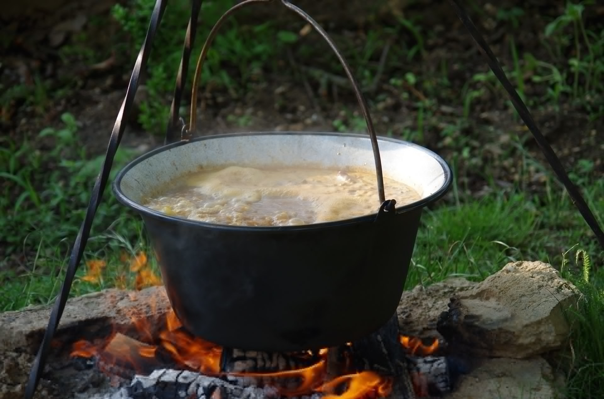

Pottage
Let's make something from nothing

Pottage was what the Saxons, Picts, Celts, Norse and a whole horde of other old-world Europeans would have ate around the campfire. Made from leeks, wild garlic, carrots, oats, all manner of herbs and spices, and whatever meat that could be had, Pottage kept for quite a while, filled you up and gave them the energy to survive the icy cold and rime covered wilds that was ancient Northern Europe. Since potatoes didn't arrive in Europe until the 16th Century our pottage recipe will not be using them. Instead we will focus on keeping with European traditions and recipes. Of course we will not sacrifice on taste or substance either. You can expect this meal to fill you up while tasting great enough to stave off a horde of pillaging vikings!!
Ingredients (Serves 10-20)
- A knob of butter
- 1-2 large onion
- 2 leeks
- 2 celery sticks
- 4 large carrots
- 1 swede (or 2-3 turnips)
- 3 parsnips
- Water
- 1/2 a cup of porridge oats
- A few sprigs of wild garlic
- A handful of fresh mixed herbs, sage, thyme, rosemary or whatever is available.
- Heat the butter/oil in a large stock pot/Dutch oven over a low-medium flame.
- Once the oil is warm, add the sliced/diced onions, leeks and celery to the pot and stir before covering over with the lid to soften for approx ten minutes.
- Then add the chopped root vegetables, stir and leave for a few minutes to soften and take on the flavour of the onions and leeks.
- Add at least enough water to cover the vegetables, more if you want to thin it out and make it go further, increase the heat and bring to the boil.
- Then reduce the heat so it is just simmering and add the oats to thicken and herbs for flavour. Top up with more water if necessary.
- Leave to simmer for about an hour, then taste!
Back